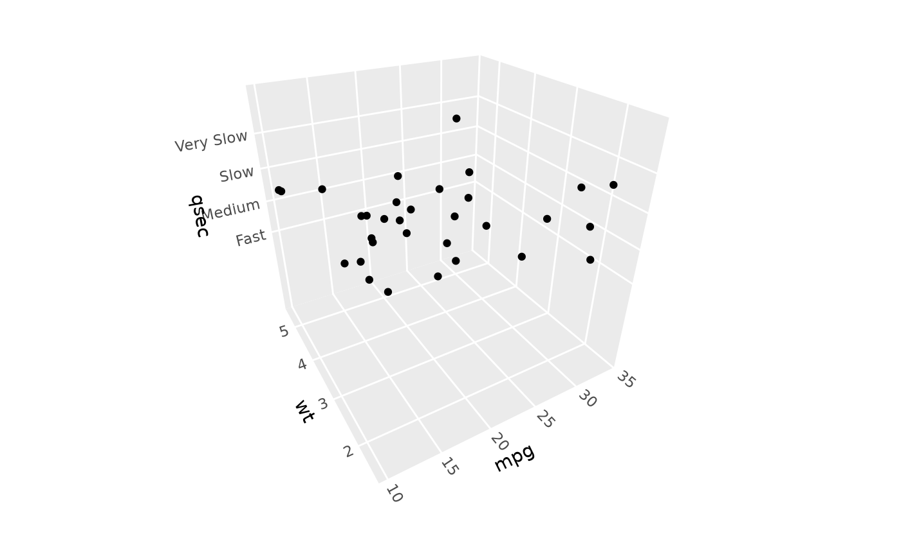

scale_z_continuous creates a continuous scale for the z aesthetic in 3D plots.
It works similarly to scale_x_continuous and scale_y_continuous, providing
control over axis breaks, labels, limits, and transformations for the z dimension.
Arguments
- name
The name of the scale, used as the axis title. Use
waiver()for the default, orNULLto omit the title.- breaks
One of:
NULLfor no breakswaiver()for the default breaksA numeric vector of positions
A function that takes the limits as input and returns breaks as output
- minor_breaks
One of:
NULLfor no minor breakswaiver()for the default minor breaksA numeric vector of positions
A function that takes the limits as input and returns minor breaks as output
- n.breaks
An integer guiding the number of major breaks. The algorithm may choose a slightly different number to ensure nice break labels.
- labels
One of:
NULLfor no labelswaiver()for the default labelsA character vector giving labels (must be same length as breaks)
A function that takes the breaks as input and returns labels as output
- limits
A numeric vector of length two providing limits of the scale. Use
NAto refer to the existing minimum or maximum.- expand
For position scales, a vector of range expansion constants used to add some padding around the data to ensure that they are placed some distance away from the axes.
- oob
One of:
Function that handles limits outside the scale limits (out of bounds).
scales::censorfor replacing out of bounds values withNAscales::squishfor squishing out of bounds values into range
- na.value
Missing values will be replaced with this value.
- transform
The name of a transformation object or the object itself. Default is "identity", but works with standard transform options such as "log10", "sqrt", and "reverse", detailed in the documentation for
ggplot2::scale_x_continuous().- guide
A function used to create a guide or its name. Since z-axis guides are not yet supported, this defaults to
"none".- ...
Other arguments passed on to
continuous_scale().
See also
zlim for a shorthand way to set z-axis limits,
coord_3d for the 3D coordinate system
Other 3D scale functions:
scale_z_discrete(),
zlim()
Examples
# Custom breaks, labels, and limits
ggplot(mtcars, aes(mpg, wt, z = qsec)) +
geom_point() +
scale_z_continuous(
breaks = c(15, 17, 19, 21),
labels = c("Fast", "Medium", "Slow", "Very Slow"),
limits = c(10, NA)) +
coord_3d()

# Works with standard scale transformations like "reverse", "log10", etc.
ggplot(mtcars, aes(mpg, wt, z = qsec)) +
geom_point() +
scale_z_continuous(transform = "reverse") +
coord_3d()